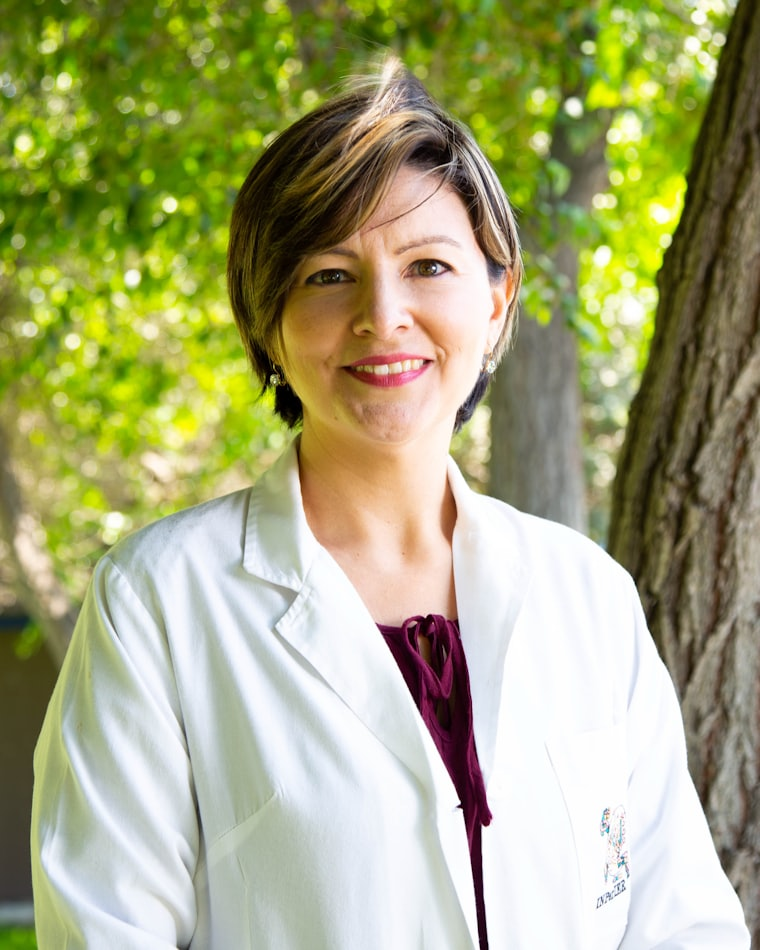
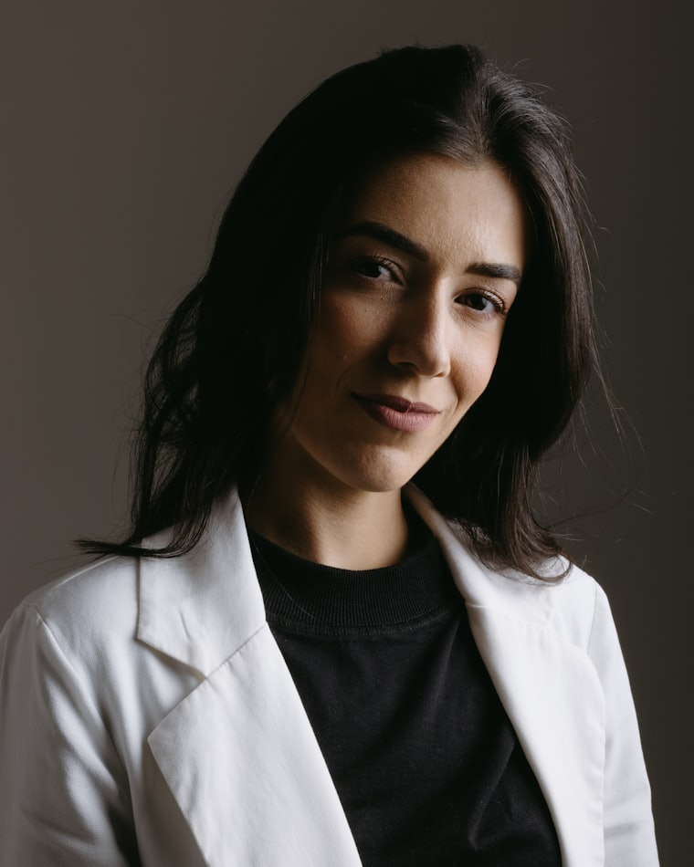

Consultations sur rendez-vous — depuis 2007
Une médecine vétérinaire calme, précise et de quartier.
Du chiot au lapin nain, nous suivons vos animaux au même endroit, avec la même équipe, sur toute leur vie. Bloc opératoire, imagerie et laboratoire sur place, à quatre minutes de l'arrêt Sallaz.
- 3 100patients suivis
- 18 ansau même carrefour
- 4 + 3vétérinaires et assistantes ASA
- FR DE EN ITlangues parlées au comptoir
Votre animal va mal maintenant ?
Appelez avant de venir. Nous préparons la salle d'urgence pendant votre trajet. En dehors des heures d'ouverture, la centrale vétérinaire vaudoise vous met en relation avec le vétérinaire de garde.
Appeler le 021 647 32 99La clinique
Tout se fait sur place, dans la même journée.
Une radio le matin, l'analyse sanguine à midi, le diagnostic avant que vous rentriez du travail. Ne pas déplacer un animal inquiet d'un cabinet à l'autre, c'est la première chose que nous lui devons.
Nos deux salles de consultation sont séparées : chiens d'un côté, chats et petits animaux de l'autre, avec leur propre entrée et leur propre salle d'attente. Les chats arrivent moins stressés, et cela se voit sur les constantes.
Nous travaillons en partenariat avec le service de garde vaudois et adressons au CHUV vétérinaire de Bern les cas qui demandent un scanner ou une neurochirurgie.
Rencontrer l'équipe-
Imagerie
Radiologie numérique et échographie abdominale et cardiaque, lecture immédiate.
-
Laboratoire
Hématologie, biochimie et analyse d'urine rendues en moins de 30 minutes.
-
Bloc opératoire
Chirurgie des tissus mous et orthopédie courante, anesthésie monitorée en continu.
-
Dentisterie
Détartrage par ultrasons, extractions et radiographie dentaire intra-orale.
-
Hospitalisation
Six box chauffés, unité féline isolée, perfusion et oxygénothérapie.
-
Pharmacie
Traitements délivrés directement au comptoir, alimentation thérapeutique en stock.
Consultations
Choisissez l'espèce. Le reste s'adapte.
Un lapin ne se soigne pas comme un labrador. Nos protocoles, nos tarifs et nos durées de consultation sont propres à chaque espèce : sélectionnez la vôtre.
Consultation type : 25 minEntrée côté route du Pavement
Consultation générale
Examen complet, poids, dents, cœur, articulations. Compte rendu écrit remis le jour même.
dès CHF 95Vaccination & rappels
Protocole adapté au mode de vie, carnet suisse et passeport européen tenus à jour.
dès CHF 78Puce & enregistrement AMICUS
Identification obligatoire et inscription à la banque de données fédérale.
CHF 65Stérilisation & castration
Chirurgie de la journée, retour à la maison le soir, contrôle à dix jours inclus.
dès CHF 420Boiteries & orthopédie
Examen locomoteur, radiographies numériques, prise en charge de la dysplasie.
dès CHF 180Suivi du chien âgé
Bilan sanguin annuel, tension, gestion de l'arthrose et de la douleur chronique.
dès CHF 210
Consultation type : 30 minSalle d'attente féline, sans chiens
Consultation féline
Manipulation « low stress », phéromones dans la salle, examen sans contention forcée.
dès CHF 95Vaccination typhus & coryza
Protocole allégé pour les chats d'appartement, leucose pour ceux qui sortent.
dès CHF 78Castration & stérilisation
Anesthésie courte, monitoring continu, sortie en fin d'après-midi.
dès CHF 180Bilan rénal
Dépistage de l'insuffisance rénale chronique dès 7 ans : sang, urine, tension.
CHF 240Détartrage & dents
Ultrasons, radiographie dentaire, extraction des résorptions douloureuses.
dès CHF 340Troubles du comportement
Malpropreté, marquage, cohabitation difficile : consultation longue à domicile possible.
CHF 160
Consultation type : 30 minLundi, mercredi et vendredi
Lapins & cochons d'Inde
Contrôle dentaire à l'otoscope, transit digestif, ration alimentaire revue ensemble.
dès CHF 85Limage des dents
Malocclusion et pousse continue : limage sous anesthésie gazeuse brève.
dès CHF 190Furets
Vaccination contre la maladie de Carré, dépistage des maladies surrénaliennes.
dès CHF 110Rats, souris, hamsters
Masses cutanées, troubles respiratoires, chirurgie des petites tumeurs mammaires.
dès CHF 85Stérilisation lapine
Prévention des tumeurs utérines, très fréquentes après quatre ans.
dès CHF 320Conseil d'installation
Cage, litière, température, cohabitation : avant l'adoption, pas après.
CHF 60
Consultation type : 40 minUniquement sur rendez-vous téléphonique
Perruches & perroquets
Plumage, bec, ongles, sexage ADN et bilan de la ration en graines.
dès CHF 105Tortues terrestres
Sortie d'hibernation, carapace, dépistage des carences en calcium.
dès CHF 105Serpents & lézards
Mues difficiles, refus alimentaire, contrôle du terrarium point par point.
dès CHF 120Radiographie exotique
Cliché sous contention douce, adapté aux très petits gabarits.
dès CHF 140Certificat CITES
Documents d'espèce protégée et attestation sanitaire pour les déplacements.
CHF 90Second avis
Relecture d'un dossier ouvert ailleurs, avec ou sans l'animal.
CHF 130
Équipe
Sept personnes, et vous verrez toujours la même.
Chaque animal est attribué à un vétérinaire référent. Vous pouvez en changer quand vous voulez ; simplement, personne ne le fera à votre place.
-

Dre méd. vét. Camille Baumgartner
Directrice · Chirurgie des tissus mous
Diplômée de Berne, dix ans au service de chirurgie de Zurich avant d'ouvrir ici.
-
Dr méd. vét. Julien Reymond
Médecine interne · Imagerie
Échographie abdominale et cardiologie. Suit les maladies chroniques du chat âgé.
-

Dre méd. vét. Alix Mermoud
NAC · Oiseaux et reptiles
Certifiée en médecine des animaux exotiques, consulte aussi pour le zoo de Servion.
-
Dr méd. vét. Marco Cavalli
Dentisterie · Anesthésie
Prend en charge les protocoles antidouleur et les patients à risque cardiaque.
-
Léa Zbinden
Assistante en médecine vétérinaire ASA
Prises de sang, hospitalisation, et la personne qui rassure les chiens à l'accueil.
-
Nadia Perrin
Réception · Coordination des urgences
Trie les appels, ouvre les créneaux d'urgence et vous rappelle après une opération.
Rendez-vous
Demandez un créneau.
Nous confirmons par téléphone dans les deux heures ouvrables. Pour une urgence, n'utilisez pas ce formulaire : appelez.
- Premier rendez-vous : prévoyez le carnet de vaccination et l'ancien dossier.
- Chats : caisse de transport fermée, couverte d'un linge.
- Paiement sur place en TWINT, carte ou facture à 30 jours.
Infos pratiques
Venir à la clinique.
Horaires d'ouverture
| Lundi | 08:00 – 12:00 · 13:30 – 18:30 |
|---|---|
| Mardi | 08:00 – 12:00 · 13:30 – 18:30 |
| Mercredi | 08:00 – 12:00 · 13:30 – 18:30 |
| Jeudi | 08:00 – 12:00 · 13:30 – 20:00 |
| Vendredi | 08:00 – 12:00 · 13:30 – 18:30 |
| Samedi | 09:00 – 13:00 |
| Dimanche | Fermé · garde vétérinaire |
Le jeudi soir est réservé aux personnes qui travaillent en dehors de Lausanne.
Accès
- Métro
m2, arrêt Sallaz, puis 4 minutes à pied vers le nord.
- Bus
Lignes 8 et 16, arrêt Pavement, devant l'entrée.
- Voiture
Six places visiteurs derrière le bâtiment, deux réservées aux urgences.
- Accessibilité
Plain-pied, sans marche, portes automatiques et table élévatrice.
Route du Pavement 61
1018 Lausanne
Ce que ça coûte
Nous affichons nos tarifs de départ à côté de chaque prestation. Avant toute intervention chirurgicale, vous recevez un devis écrit ; s'il doit être dépassé, nous vous appelons d'abord.
Les assurances animales suisses courantes sont acceptées. Nous remplissons les formulaires de remboursement au comptoir, sans frais.
Demander un devisCe qu'on nous dit
-
« Ma chatte de seize ans s'est laissé examiner sans grogner. C'est la première fois en huit ans de vétérinaires. »
Sandrine M. · Chailly
-
« Opéré un mardi matin, rentré le soir, appelé le lendemain pour prendre des nouvelles. Rien à ajouter. »
Thomas B. · Épalinges
-
« Le seul endroit du canton où on ne m'a pas regardée bizarrement en arrivant avec un rat. »
Inès D. · Lausanne-Flon